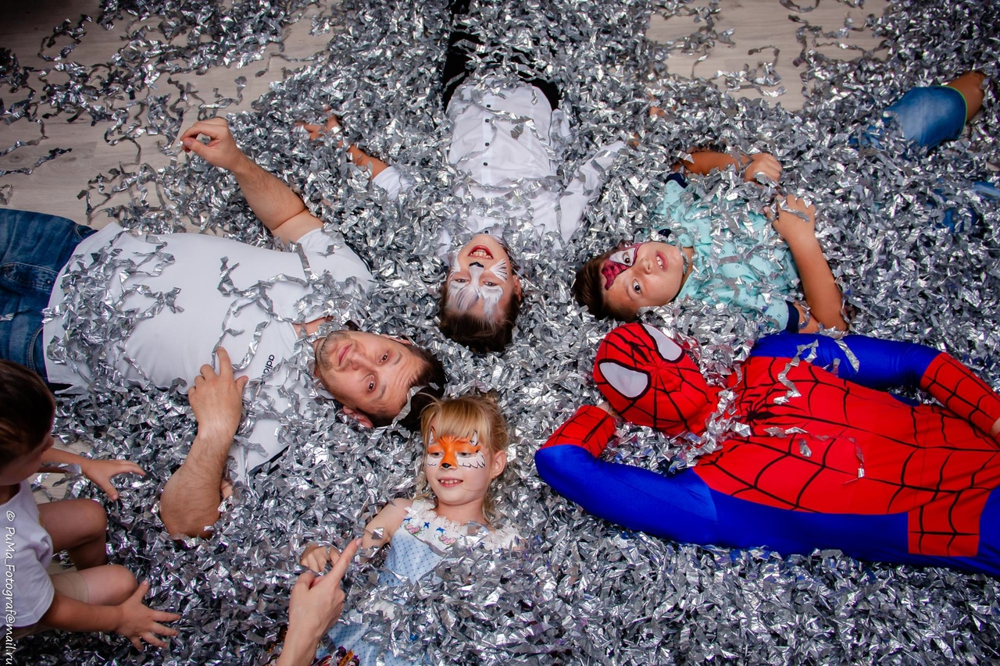
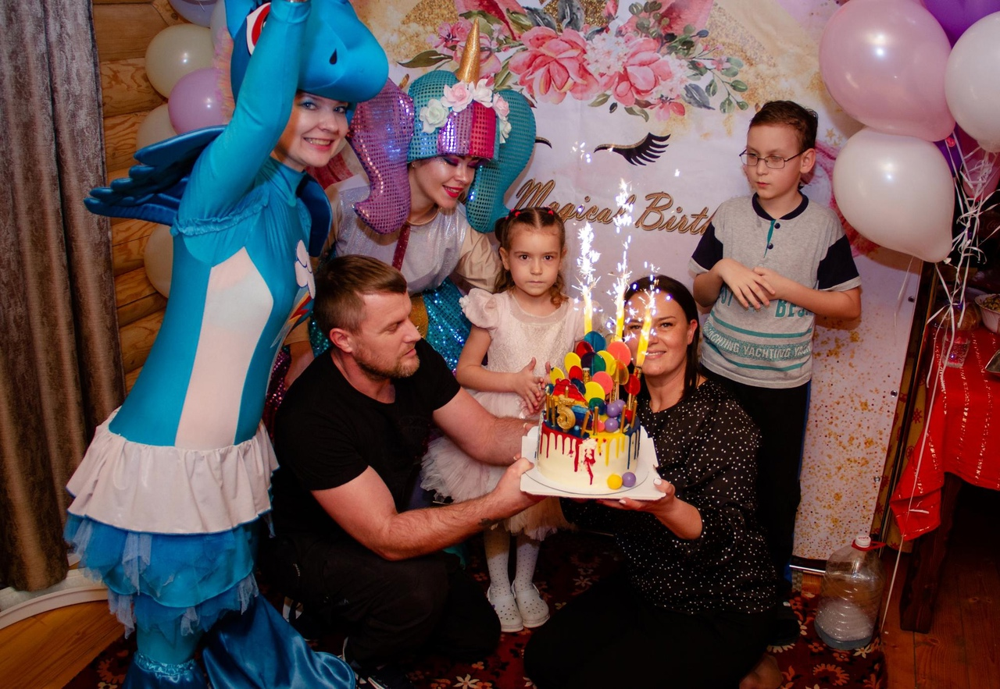
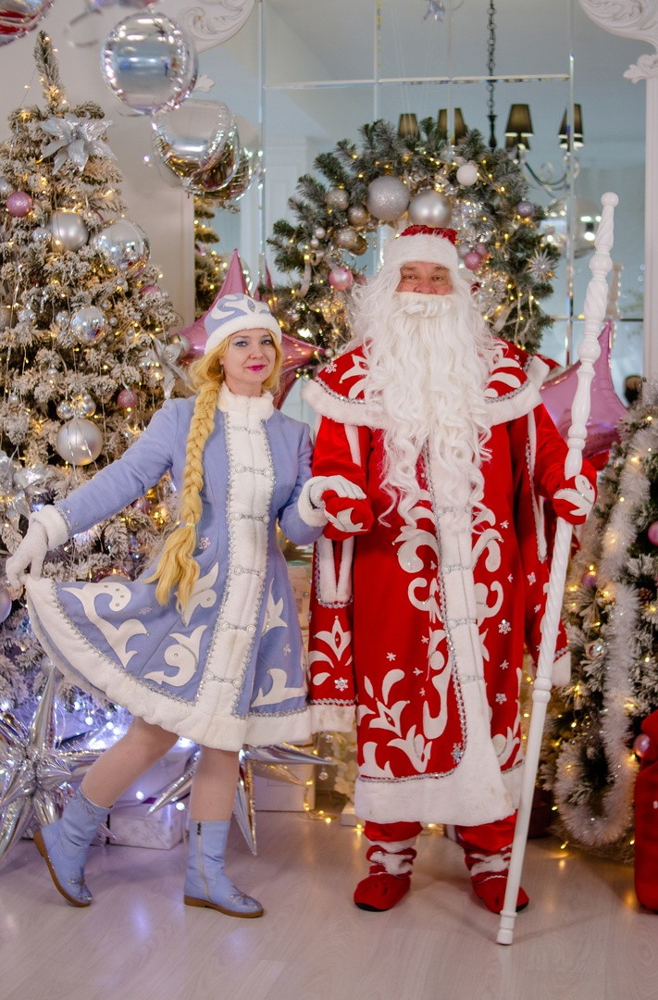

До курса Кристина Аспиотис, аниматор из Краснодара, зарабатывала около 60 тыс. рублей в месяц, работая преимущественно с агентствами. После прохождения курса её доход стабилизировался на уровне от 150 тыс. рублей в месяц, а в пиковые периоды доходил до 220 тыс. рублей. Кристина сменила машину и позволяет себе больше выходных, передав часть работы аниматорам.
Мы взяли у нее короткое интервью:
— Крис, поделись, что было до курса, какой средний доход был в месяц? Сколько клиентов?
— Больше заказов было с агенств, на которые приходилось работать. Доход, ну тыщ 60))) Сейчас стабильно от 150 в месяц. Вальяжный график. И аниматоры, работающие на меня)
— Отличный рост! Какие сложности были во время обучения на нашем курсе? Насколько сложно было учиться? За сколько прошла обучение?
— Сложности - это всегда начать! А так наоборот, всё интересно и доступно) Курс, наверное, до финала так и дошла! И так стало работы хватать.

— С куратором проходила курс? Каково было работать с куратором, что было полезно, мотивировало ли это тебя? Как считаешь, без куратора получилось бы так же?
— Да, с куратором. Мотивировала и поддержка от него, и сроки сдачи. У самой, вряд ли, бы так получилось, потому что, ну, такой я человек – нужны дедлайны и пинки под зад)
— Какие сейчас действия делаешь для привлечения клиентов? Как часто пишешь посты? Запускаешь ли рекламу?

— Объявления на площадках, посты – по мере желания и времени для них. В основном, в постах так-то отпала надобность, выкладываешь, чтоб поддерживать красивую картинку своих соцсетей)
— А можешь поделиться, как изменилась жизнь, когда увеличился доход? Может что-то купила себе? Съездила в путешествие? Что-то смогла сделать, чего раньше не могла позволить себе)
— Стала, в принципе, позволять себе больше. Поменяла машину, да. Пока не ту, о которой мечтаю. Но всё впереди) Стала больше себе разрешать выходных и чтобы ребята работали вместо меня. Учусь делегировать)
— Все, остался только вопрос, сколько сейчас зарабатываешь? Сколько в среднем в месяц? Сколько клиентов? А вот примерно сколько за год было прошедший заработано?

— Блин. Прям за год не складывала. Я по месяцам смотрю. Ну, если раньше вяло текуще зарабатывала 50 тысяч потолок, то сейчас в самый фиговый не сезонный месяц минимум 150 тысяч. На новогодние 2023 года было 220 тысяч. Да, не миллионы, но я считаю огромный прогресс! Буду стремиться больше, дальше и конечно же расширяться.
— Кристина, я рада, что ты растешь! Успехов тебе и спасибо за обратную связь!